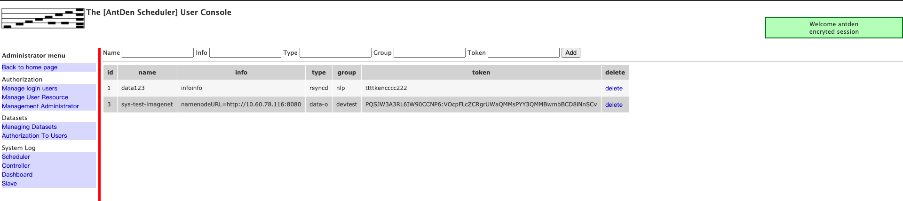

1. 数据集

可以看到，托管一个数据集需要5个字段。
Name 数据集的名称
Info 数据集的信息，比如rsyncd的地址
Type 数据集的类型（当前默认存在两个数据类型，rsyncd和data-o，类型可以自定义，但是需要提供相应的插件对接）
Group数据集所在的组，（机器资源组名和数据集组名相同的时候，机器有权限使用该数据集）
Token数据集使用的token信息
1.1. 插件
/opt/mydan/dan/antden/code/datasets 目录下是数据集管理插件存放位置， 目录下可以看到有目录 rsyncd， 在rsyncd目录下有两个可执行文件client和slave
如果需要添加其他数据集合的管理，需要添加对应的插件到该目录中
具体插件怎么编写，在后续章节中展开